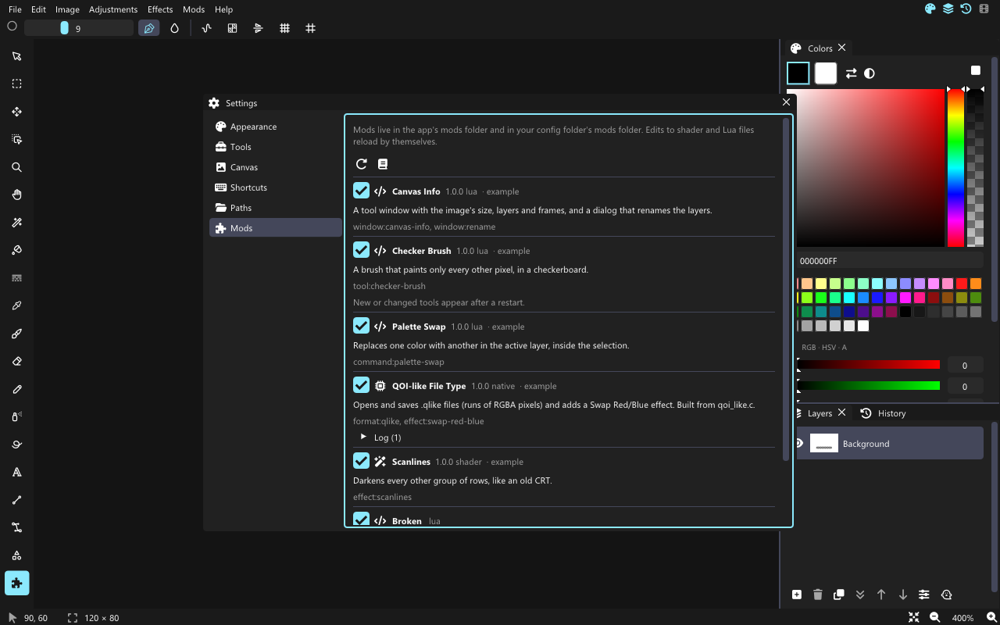

Getting started
David has three kinds of mods. Pick the simplest one that can do the job:
| Tier | What it is | Good for |
|---|---|---|
| Shader | One .glsl file | Per-pixel effects that run on the GPU: color changes, patterns, distortions |
| Lua | One or more .lua files | Effects, commands that edit layers, painting tools |
| Native | A DLL or .so built from C or C++ | Heavy effects and new file formats |
Where mods live
Every mod is a folder with a mod.json inside. David looks in two places:
- the
modsfolder next to the program (mods that ship with David, andmods/examples/); - the
modsfolder in your config folder:%APPDATA%\David\modson Windows,~/.config/david/modson Linux. Mods > Open mods folder opens it.
A mod in your config folder replaces a bundled mod with the same folder name.
mod.json
{
"name": "Scanlines",
"version": "1.0.0",
"api": 1,
"kind": "shader",
"entry": "scanlines.glsl",
"description": "Darkens every other group of rows."
}| Field | Meaning |
|---|---|
name | Shown in Settings > Mods. |
version | Your mod's version, any text. |
api | The David API version the mod needs. This David has version 1; a higher number refuses to load. |
kind | shader, lua or native. |
entry | The file David loads: the .glsl file, the main .lua file, or the library name without its extension (qlike loads qlike.dll or qlike.so / libqlike.so). |
description | One line, shown under the name. |
permissions | Optional list, shown to the user. Version 1 grants nothing extra: Lua mods can't reach files or the network either way. |
Turning mods on and seeing errors
Settings > Mods (or Mods > Manage mods) lists every mod with a switch. Your own mods start on; the examples start off. A mod that fails to load shows its error in red under its name: a JSON mistake, a Lua syntax error with its line, or a GLSL compile error. What david.log and print write shows under Log.

The edit loop
Shader and Lua mods reload by themselves: keep David open, save your file, and within a second the new version is in the menus. If an effect's dialog is open, the reload waits until you close it. Native mods and new Lua tools need a restart.
The same mods run from the command line, which is handy for quick checks:
david-cli --mod scanlines in.png --effect scanlines:spacing=4 -o out.png
david-cli --list-effects